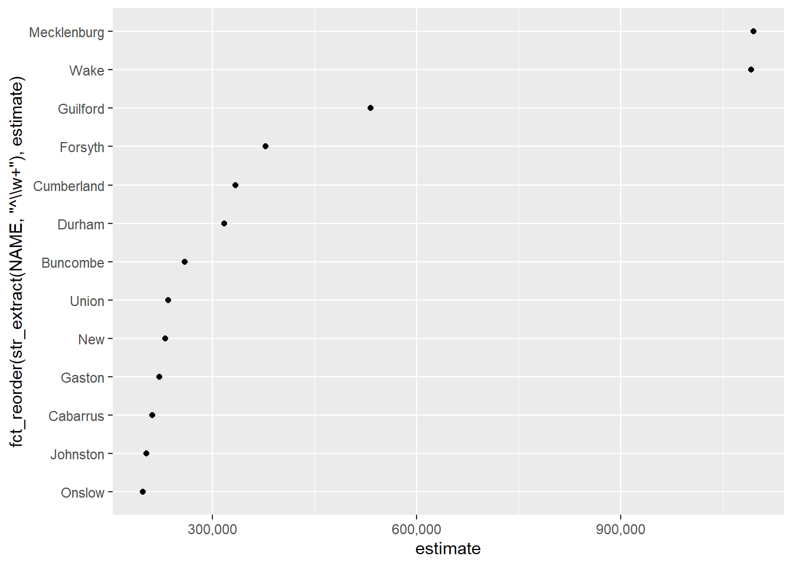
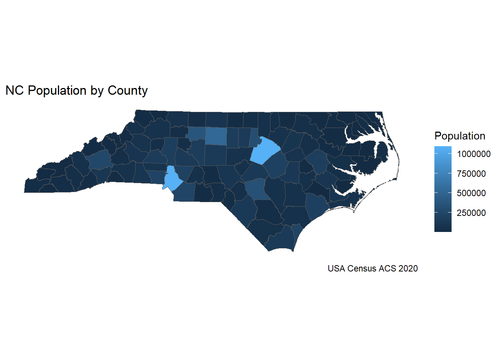

library(tidyverse)
library(janitor)
library(fs)
library(here)
library(renv)
library(svglite)
library(sf)Making a reproducible project
Chapter 6 case study
Make a Quarto project
This Quarto project is also a git repo with {renv} dependency management. i.e. reproducibility!
You can and, generally, should set up your Posit/Quart project1 as a git repository. Do this when you create your Quarto document. If you did not, you can retroactively configure your RStudio project as a git-enabled and renv-enabled Quarto Project.23
We will use Posit/RStudio’s native ability to orchestrate git and GitHub. You should create a free GitHub account and configure your RStudio with your GitHub Personal Access Token.4
Load library packages
As a general rule for our project we will load eight Tidyverse packages by invoking the following command: library(tidyverse).5
This project will import census data in the second code-chunk. The Census ACS data were initially downloaded by the workshop authors via the {tidycensus} package. For this project we will focus on managing existing census data as part of our reproducible computational workflow.6
Gather data
nc_pop <- sf::read_sf(here("data/raw/ACS_nc-county_shapefile.shp"))
nc_pop Clean / Normalize / Wrangle
a first look.
nc_pop |>
sf::st_drop_geometry() |>
janitor::clean_names() |>
separate(name, into = c("county", "state"), sep = ",") |>
mutate(county = str_remove(county, " County")) |>
rename(population = estimate) Save cleaned data
Save cleaned data
Tip:
here::here()will list the RStudio project directory.
library(here)
here()[1] "C:/Users/jrl/Documents/casestudy_reproducible_workflow_census"Or use relative file paths
fs::dir_create(here("data/cleaned"))
nc_pop |>
sf::st_drop_geometry() |>
janitor::clean_names() |>
separate(name, into = c("county", "state"), sep = ",") |>
mutate(county = str_remove(county, " County")) |>
rename(population = estimate) |>
write_csv(file = here("data/cleaned/cleaned-ACS_nc-county-populations.csv"))Analysis and visualization
nc_pop |>
sf::st_drop_geometry() |>
summarise(median_couty_pop = median(estimate),
mean_county_pop = mean(estimate),
min_pop = min(estimate),
max_pop = max(estimate))visualization
Show the code
my_viz <- nc_pop %>%
arrange(desc(estimate)) |>
slice(1:13) |>
ggplot(aes(x = estimate, y = fct_reorder(str_extract(NAME, "^\\w+"),
estimate))) +
geom_point() +
scale_x_continuous(labels = scales::comma)
my_viz
map
Show the code
nc_pop |>
ggplot(aes(fill = estimate)) +
geom_sf() +
coord_sf(datum = NA) +
theme_minimal() +
labs(fill = "Population",
title = "NC Population by County",
caption = "USA Census ACS 2020")
Generate independent outputs
By “independent” I mean manual, via code, saving outputs to the local file system. This process is not strictly necessary since the quarto computation notebook includes generated visualizations in the derived reports. But, sometimes we like a belt and suspenders.
Above we used the {here} package to ensure we managed our files relative to the project’s root directory on the local file system. You can also use other UNIX-style relative path constructions such as .. Using relative file paths in this way accomplishes the same action as {here}. I have included comments using {here} below.
# fs::dir_create("../output_secondary/images")
dir_create(here("output_secondary/images"))
# ggsave("../output_secondary/images/top-population_scatter-plot.svg", my_viz)
ggsave(here("output_secondary/images/top-population_scatter-plot.svg"), my_viz)Fin
Footnotes
Tooltip background on RStudio projects↩︎
In this case, the the {usethis} library package is helpful.↩︎
To learn more about setting up git with R, please see the quick tips for doing using git and RStudio with the {usethis} package by visiting the Rfun git workshop page.↩︎
More information can be found at the {usethis} package web page; See Managing git(Hub) credentials. A quick guide to managing git and GitHub credentials can be found at the Rfun git quick reference page and more information can be found at the Rfun git/GitHub workshop page.↩︎
You can reduce the overall size of your project by being more selective regarding which tidyverse packages you use. e.g. Are you using only {ggplot2} and {dplyr}? You can load those only those packages, instead of loading all eight of the eight defualt tidyverse packages.↩︎
If you want to learn more about {tidycensus}, you can see the tidycensus package website and invoke the
library(tidycensus).↩︎